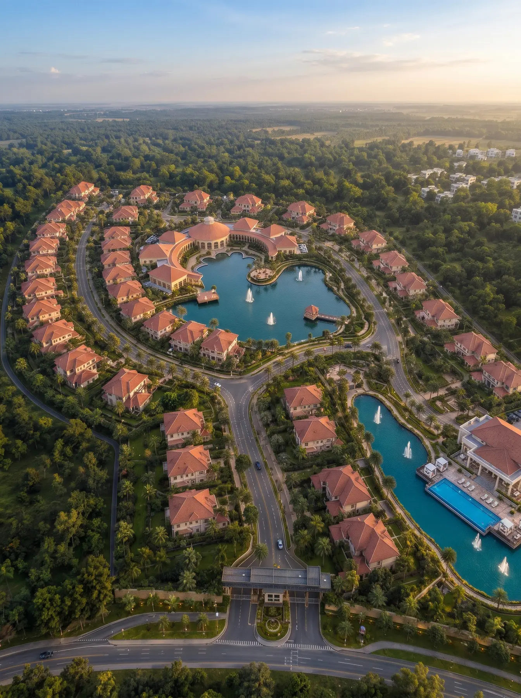

Owning a large piece of land raises one question before any other: what should it become? A township, a resort, a wedding venue, a commercial project, or a mix? The honest answer comes from studying the land and the rules, not from what the neighbours built. If the answer is a mix, see our guide to designing a mixed-use development.
Landowners and developers often come to our studio with ten, fifteen or fifty acres and a rough idea. Sometimes the idea is right. Often the land suits something else, or can carry only half of what was planned once roads, open space and setbacks are taken out. Finding that out on paper costs very little. Finding it out after buying the land, or after starting construction, costs a great deal.
This guide explains how a large-scale land planning architect evaluates a land parcel in India before development: the checks that come first, what the rules allow, how to compare uses, how much of the land you can actually sell or build on, and what the first numbers look like. It draws on master plans our team has prepared for sites such as a 15-acre villa township in New Chandigarh and an 11-acre hill community in Mukteshwar.
Why the Size of Your Land Is Not What You Can Build
Two plots of the same size can carry very different projects. What counts is the buildable and saleable area left once the rules and the infrastructure have taken their share. On a large parcel, a big part of the land goes to things nobody pays for directly: roads, parks, setbacks, utilities and community facilities.
Planning guides by Studio Matrx give an indicative land budget for a plotted residential layout in India:
| Part of the layout | Indicative share of gross land |
|---|---|
| Saleable plots | About 55–65% |
| Roads and circulation | About 20–30% |
| Parks and open space | Often a statutory minimum of around 10%, varying by state |
| Amenities, utilities and civic uses | The balance |
These are rules of thumb, and the real split depends on your state's rules and the shape of your land. They show why an owner who expects to sell 90% of a 20-acre site is usually in for a surprise, and why the layout itself is worth so much attention.
Step 1: Check the Land Before Anything Else
A feasibility study starts with the facts of the land. Some of these can stop a project outright, so we check them before drawing a single option.
Title and records
Clear ownership, matching revenue records, no disputes or encumbrances, and boundaries that match what is on the ground. A large parcel assembled from several smaller holdings needs particular care, because one missing piece can split the site.
Access and road frontage
How wide is the road the land faces, and how long is the frontage? Road width often decides what uses and heights are allowed, and a township or resort needs a safe main entry and a separate service entry. Land reached only by a narrow village road has limited options until access improves.
Shape, slope and ground
A compact, regular parcel plans more efficiently than a long, narrow strip or an irregular one. On sloping land, the gradient decides where buildings and roads can go. At Mukteshwar, a slope analysis of the ridge set the position of every villa, which follow the contour so the hillside is not cut into platforms. Soil, groundwater and drainage also need checking, including whether any part of the land floods.
Utilities and surroundings
Power, water and sewage connections, or the space to provide them on site. What is next door also matters: a highway, an industrial unit or a quiet river edge each points toward different uses.
Special restrictions
Eco-sensitive zones around forests and sanctuaries, river and lake setbacks, hill-development rules, airport height limits and heritage zones can all limit what is built. These are often the most expensive surprises, because they can cut density or height across the whole site.

Step 2: Find Out What the Rules Allow
Once the land itself checks out, the next question is what the planning rules permit on it. These differ between states, cities and even zones within the same city, so they have to be confirmed for your exact land with the local development authority.
- Land use in the master plan. The city or regional master plan marks your land for a use, such as agricultural, residential, commercial or recreational. Building something else usually needs a change of land use (CLU).
- FAR or FSI. The total floor area you can build, as a multiple of the plot area. It decides how many homes, rooms or square feet the land can carry.
- Ground coverage, height and setbacks. How much of the plot buildings can cover, how tall they can go, and the open margins they must leave.
- Minimum sizes and policies. Many states have a township policy with a minimum area, commonly in the 25–100 acre range, that brings its own rules and incentives. Smaller gated communities of 5–15 acres are often planned as mini-townships without qualifying for them.
- Approvals. Layout sanction, building plans, fire NOC, environmental clearance above 20,000 sq m of built-up area, and RERA registration for most projects that sell plots or homes.
Our township approvals guide walks through CLU, layout sanction and RERA step by step.
Step 3: Compare What the Land Could Become
With the facts and the rules known, we test a few realistic uses side by side. We are looking for the best use the land can legally carry and the market will pay for. The option with the biggest number on paper often fails one of those two tests.
| Use | Land that suits it | Main thing to check |
|---|---|---|
| Plotted or villa township | Larger, regular parcels near a growing city or highway | Saleable share after roads and parks, and demand for plots |
| Group housing | Land inside city limits with good FAR and road width | FAR, height limits and parking |
| Resort or hotel | Land with a view, a river, hills or heritage nearby, a few hours from a big city | Tourism demand, slope and eco rules |
| Wedding or banquet venue | Edge-of-city land on a wide road with room for parking | Road access, parking and noise from neighbours |
| Commercial or mixed use | Land on a main road or junction with high visibility | Commercial land use, frontage and footfall |
Large parcels often work best as a mix: a township with a clubhouse and retail on the main road, or a resort with a wedding venue that earns while the rooms fill up. For each of these, we have written in more depth on planning a township, designing a resort, hotel master planning and wedding venue planning.
Step 4: Plan the Layout for Efficiency
On a large parcel, small layout decisions add up. A few per cent more saleable land across twenty acres is a lot of plots. Layout efficiency is the share of usable or saleable area you get from the gross land after roads, open space and amenities. The ways to improve it are mostly about geometry:
- A clear road hierarchy. One main road with smaller loop roads serving homes uses less land than a uniform grid of wide roads. In our New Chandigarh plan, villa clusters sit on internal loops off a single tree-lined boulevard.
- Plots on both sides of each road. A road serving plots on one side only costs land for half the benefit.
- Open space that does a job. Parks and water placed where they raise the value of the plots around them. Leftover corners make poor parks. At New Chandigarh, a landscaped central lake forms the spine of the whole community.
- Working with the land. On slopes or irregular parcels, following the contour and the boundaries avoids expensive earthwork and wasted pockets.
Efficiency has a limit. A layout squeezed for every last plot can lose the open space, trees and views that make the land sell at a better price. We cover these trade-offs in our township master plan design ideas.

Step 5: Put Rough Numbers on Each Option
A feasibility study needs honest ballpark figures so the options can be compared, though not yet a full cost plan. For the infrastructure side of a township, our township development cost guide uses industry estimates of roughly ₹30–32 lakh per acre for basic infrastructure (roads, drainage, water and power networks, common areas), with external development charges (EDC) able to add roughly 15–20% to overall project cost. For hospitality, our resort guide puts a mid-scale resort at about ₹35–60 lakh per key, excluding land.
These figures are starting points. A real feasibility study refines them with your local rates, the authority's charges and the market for each use, and compares them against what each option can earn.
Step 6: Decide What Gets Built First
Very few large parcels are developed in one go. A good master plan splits the land into phases that can each work on their own:
- Phase one usually takes the main entry, the spine road, key utilities and the part of the site with the best frontage or view, so early sales or bookings fund the rest.
- Shared facilities such as a clubhouse or resort core are placed where every later phase can use them. At Mukteshwar, the resort clubhouse serves as the hospitality core for 45 villas and serviced studio residences. Senior communities rely on this kind of core too, as our senior living planning guide explains.
- Reserved land stays free of anything that would block later phases, such as a substation or water tank in the wrong place.
Six Mistakes Owners Make With Large Land Parcels
Most of the land problems we are asked to fix started with a decision made before an architect was involved. The same ones come up again and again:
- Buying first, checking later. Paying for land before confirming its land use, access and restrictions. A parcel inside an eco-sensitive zone or without a usable road can lose much of its value overnight.
- Copying the neighbour. Choosing a use because the next plot did it. If three plotted colonies already sit on the same road, a fourth one competes with them for the same buyers.
- Counting the whole plot as saleable. Building a business plan on the gross area, then losing a third or more of it to roads, parks and setbacks once the layout is drawn.
- Levelling the land. Flattening slopes, filling low ground or cutting old trees to fit a standard layout. It costs money, causes drainage problems, and often destroys the feature that made the land attractive.
- Leaving infrastructure until last. Water, sewage, power and stormwater need land and routes of their own. Squeezing them in after the plots are fixed usually means giving up plots.
- Planning only phase one. Developing the best part of the site with no plan for the rest, and ending up with leftover land that cannot be reached or served properly.
None of these needs a large budget to avoid. They need the right questions asked before the land is bought or the first road is laid, which is exactly what a feasibility study is for.
When to bring in a land planning architect
The most useful time is before you buy, or as soon as you own the land and before you commit to a use. At that stage a short feasibility study can still change the decision. Once plots are sold or buildings started, the plan can only be adjusted around what already exists. If you already hold land and have an idea in mind, a quick review of that idea against the land and the rules is still worth doing before you spend on detailed drawings.
What a Land Planning Architect Gives You
A feasibility and master planning study for a large parcel typically produces:
- A site analysis covering access, slope, drainage, views, surroundings and restrictions
- A summary of the rules that apply: land use, FAR, coverage, height, setbacks and approvals
- Two or three development options compared side by side
- A land budget for the preferred option: saleable or buildable area, roads, open space and amenities
- A concept master plan with road layout, zoning and phasing
- Rough cost figures for each option to support the financial study
Large-scale planning is a different skill from designing a single building. If you are comparing firms, our guide on what to look for in a township architect lists the questions to ask.
Land Parcels We Have Planned
Villa township, New Chandigarh (concept)
A 15-acre site planned around a curving, landscaped lake, with private villas, a resort-style clubhouse and tree-lined boulevards. See the New Chandigarh project.
Hill community, Mukteshwar (concept)
An 11-acre ridge in the Kumaon hills with 360° Himalayan views, planned for 45 private villas, serviced studio residences and a resort clubhouse, with every villa placed along the contour. See the Mukteshwar project.
Sangam Pooja Wellness Resort, Prayagraj
A 2.5-acre riverfront estate on the Ganga where a riverbank analysis came first: the main palace anchors the arrival, and resort villas step down toward the water along the natural gradient. See the Sangam Pooja project.

Frequently Asked Questions
What is a land feasibility study?
A land feasibility study checks what a piece of land can realistically become before money is spent developing it. It covers the land itself (title, access, slope, drainage and restrictions), the planning rules that apply (land use, FAR, coverage, height and approvals), a comparison of possible uses, a land budget and rough costs. It tells you whether a project works on that land, and which project works best.
How do I know what I can build on my land?
Start with the land use shown for your parcel in the local master plan, then check the FAR or FSI, ground coverage, height limits and setbacks that apply to that zone and road width, along with any eco-sensitive, river, hill, airport or heritage restrictions. These differ between states and cities, so confirm them with the local development authority. An architect can then test which uses fit those limits and the market.
How much of my land will be saleable in a plotted development?
As a rule of thumb, a plotted residential layout in India often ends up with about 55–65% of the gross land as saleable plots, with roughly 20–30% going to roads and around 10% to parks and open space, which many states set as a minimum. The rest goes to amenities and utilities. The real figure depends on your state's rules and the shape of your land, and a well-planned road layout can improve it.
What does a large-scale land planning architect do?
They study the land, summarise the rules that apply, compare development options, prepare a land budget and a concept master plan with roads, zoning and phasing, and give rough figures to support the financial study. Once an option is chosen, they take it through layout approvals and into detailed design.
How much land is needed for a township in India?
It depends on the state. Many state township policies set a minimum area, commonly in the 25–100 acre range, to qualify as an integrated township with its incentives. Smaller gated communities of 5–15 acres are often planned as mini-townships without qualifying for those incentives.
Study the Land, Then Decide
The best use of a large land parcel is found by checking the land, reading the rules, testing honest options and planning the layout carefully, in that order. Getting them right takes a few weeks of study. Getting them wrong can cost the whole project.
If you own or are about to buy land and want to know what it can become, talk to our studio. You can also see our township and master planning work.